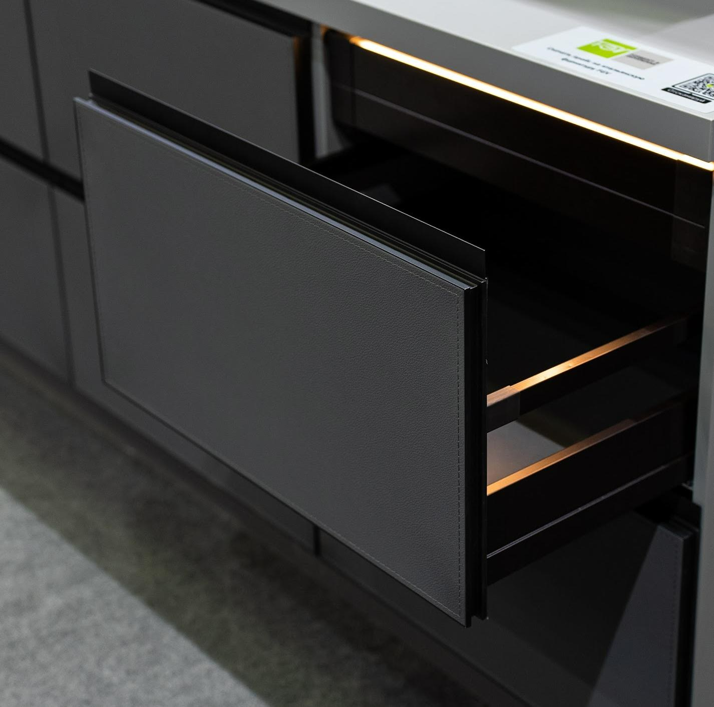

Фасады из алюминиевого профиля со вставкой из экокожи с прошивкой по периметру — под ключ.
| Применение | распашные, ящики, купе, компланарные, складные, подъёмные |
| Высота | рекомендуемая до 3000 мм |
| Профили | высокая ручка (от 163 мм) · скрытая ручка (от 136 мм) · прямой (от 126,5 мм) |
| Экокожа | MATTI — 14 цветов · VICENZA — 9 · AUTO — 5 |